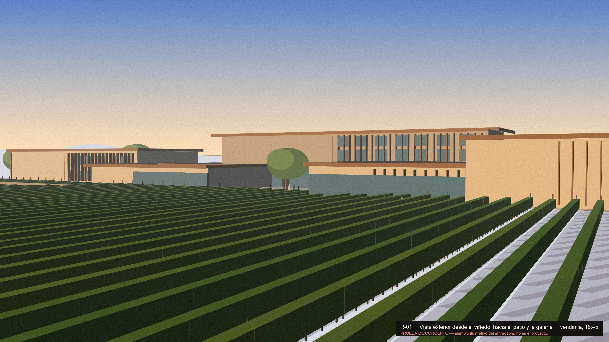
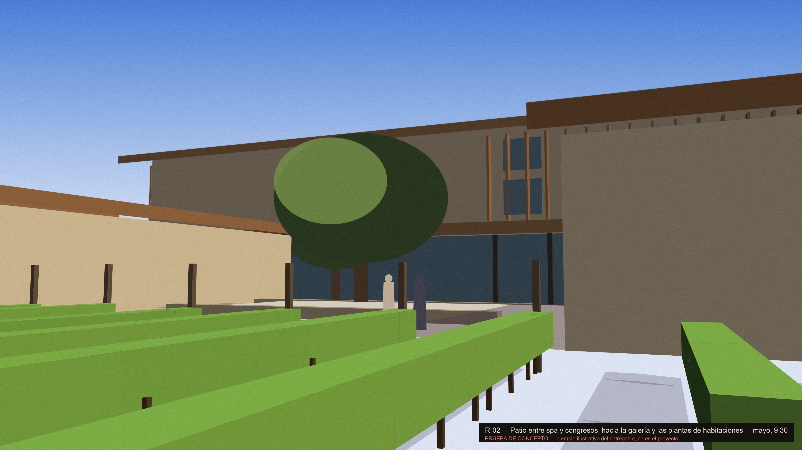
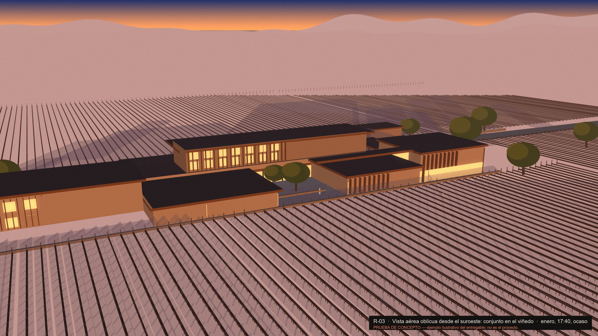
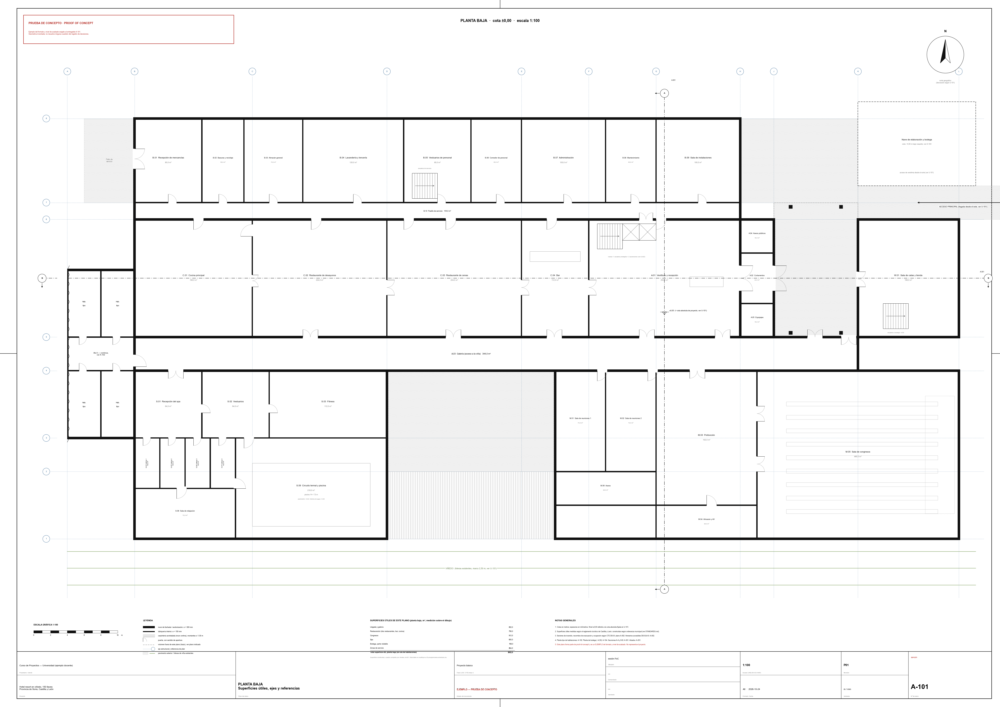

One scheme, three stills, and a model you can fly through
This page shows what the two final deliverables of the Soria vineyard hotel package look like when they are finished: the floor plan sheet and the rendered exterior perspective. Nothing here is the design. The geometry, the materials, the viewpoints and the light were invented to demonstrate format and level of finish.
The model above and the three stills below are produced from a single description of the example scheme. Each still is a camera placed in that model, with a season and an hour chosen to show one thing clearly. Press a view button to jump to that camera, then drag or fly away from it to check what the still leaves out.
- Programme (owner-fixed)
- 150 keys · winery · conference · two restaurants · bar · spa
- Example site grid
- vine rows N–S at 2,50 m
- Example materials
- limestone plinth · timber fascia and fins · glazed gallery
- Example stills
- 3840 × 2160 px, captioned with view, season and hour
- Example sheet
- A0 landscape, 1:100, UNE-EN ISO 5457 / 7200
- Model source
generators/make_render.py→scene.js




How the model and the stills stay consistent
A single Python script holds the scheme as a list of boxes in metres, a vine-row rule, a few trees and figures, and a table of views. Run with a view name it renders that still through a pinhole camera. Run in scene mode it writes the same boxes, rows and view table to a small file this page loads. Change the scheme once and both outputs change.
The view buttons above set the model's camera to the still's exact eye point, target and field of view, and its sun to the still's hour. Season changes only the canopy, so you can see the January structure from the May viewpoint if you want to.
What the real deliverables must add
The example plan shows one floor and stubs the guestroom wing; the real package needs every distinct level, with areas reconciled to the area schedule. The example stills are flat-shaded; the real perspective comes from the modelling route recorded in the package and may show only what exists in the floor plans.
Everything on this page is a floor, not a ceiling. The owning files in the package remain the only source for any number, dimension or decision.